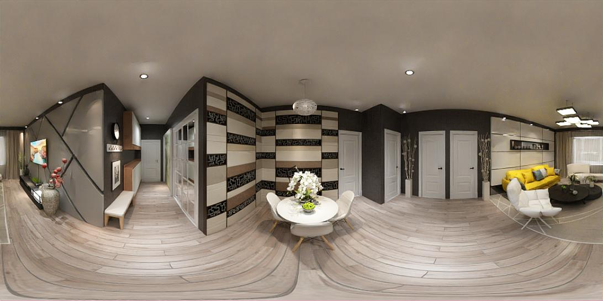
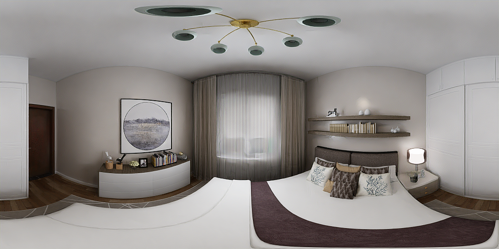
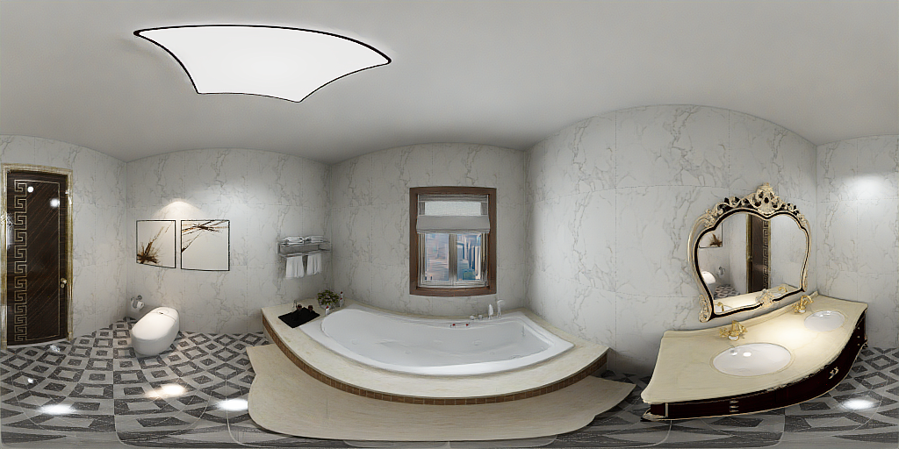
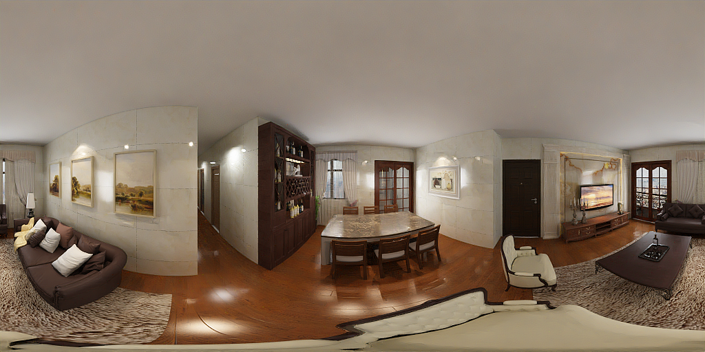
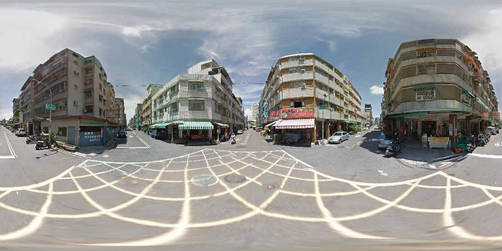
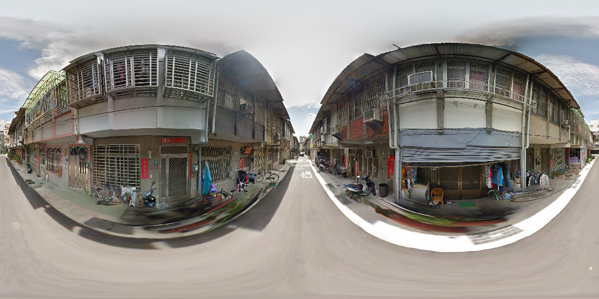

 
 
 
Abstract
Panorama has a full FoV (360°×180°), offering a more complete visual description than perspective images. Thanks to this characteristic, panoramic depth estimation is gaining increasing traction in 3D vision.
However, due to the scarcity of panoramic data, previous methods are often restricted to in-domain settings, leading to poor zero-shot generalization. Furthermore, due to the spherical distortions inherent in panoramas, many approaches rely on perspective splitting (\textit{e.g.}, cubemaps), which leads to suboptimal efficiency.
To address these challenges, we propose DA2: Depth Anything in Any Direction, an accurate, zero-shot generalizable, and fully end-to-end panoramic depth estimator. Specifically, for scaling up panoramic data, we introduce a data curation engine for generating high-quality panoramic depth data from perspective, and create $\sim$543K panoramic RGB-depth pairs, bringing the total to $\sim$607K. To further mitigate the spherical distortions, we present SphereViT, which explicitly leverages spherical coordinates to enforce the spherical geometric consistency in panoramic image features, yielding improved performance.
A comprehensive benchmark on multiple datasets clearly demonstrates DA2's SoTA performance, with an average 38% improvement on AbsRel over the strongest zero-shot baseline. Surprisingly, DA2 even outperforms prior in-domain methods, highlighting its superior zero-shot generalization. Moreover, as an end-to-end solution, DA2 exhibits much higher efficiency over fusion-based approaches and enables a wide range of applications.